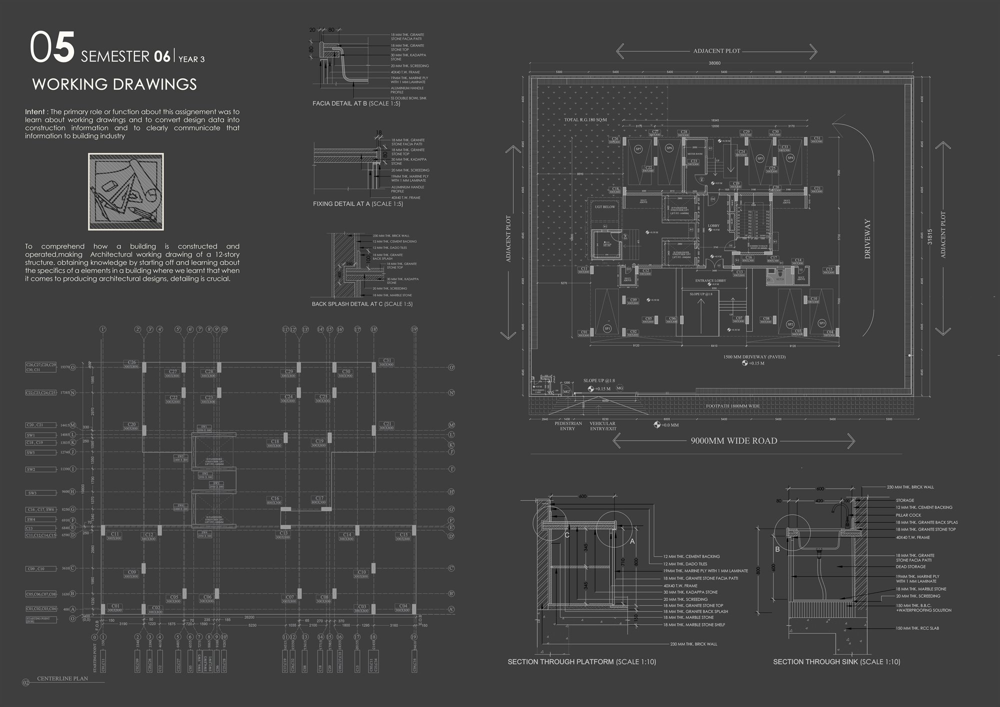

Work / 05 · Technical
Working Drawings
A construction drawing set for a twelve-storey residential building, from column grid to kitchen counter.

- Type
- Working drawings, Semester 6
- Year
- 2022
- Building
- Twelve-storey residential, stilt parking, refuge floor at level 7
- Drawings
- Centre-line and column layout, ground floor plan, sections XX′ and YY′, platform and sink details
- Scales
- 1:100, 1:10, 1:5
The purpose of this assignment was to learn how working drawings turn design data into construction information, and to communicate that information clearly to the building industry.
Working through a twelve-storey structure from the ground up showed how a building is put together and run: the centre-line plan and column schedule, sections through the lift and stair cores and the refuge floor, and joinery details down to the granite, marine plywood and laminate layers of a kitchen platform. When it comes to producing architecture, detailing is crucial.
01The drawing set
Click any sheet to view it at full size.


